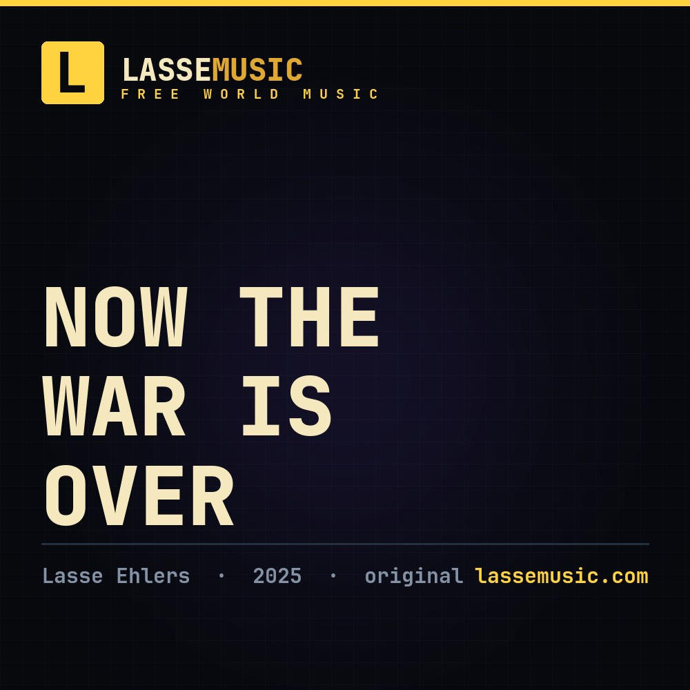
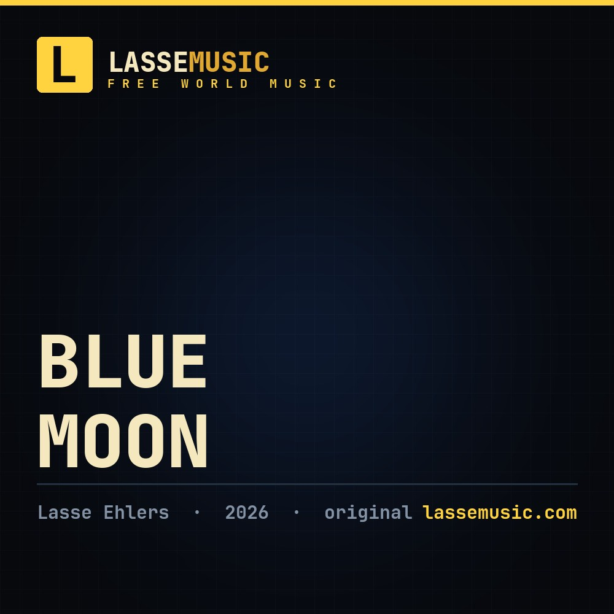
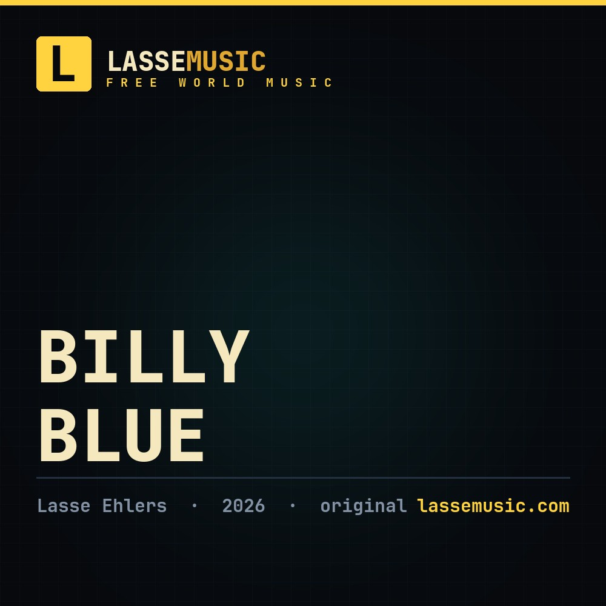

Now the War Is Over
Written over maybe 21 years and finally finished. The war is over and the man wants to go home to cry on his woman's shoulder — figuratively speaking. Also a love song.
Free World Music
Original songs by Lasse Ehlers — written on the streets of Copenhagen and finished in the studio. Listen to the full songs here, free. Building the voice of the free world, one song at a time.

Written over maybe 21 years and finally finished. The war is over and the man wants to go home to cry on his woman's shoulder — figuratively speaking. Also a love song.

The moon is a cold light, the earth is flat, and anarcho-capitalism is the only right.

Money is printed from thin air and used to control us. We must wake up and break free before they break us — while inflation gets the best of us.